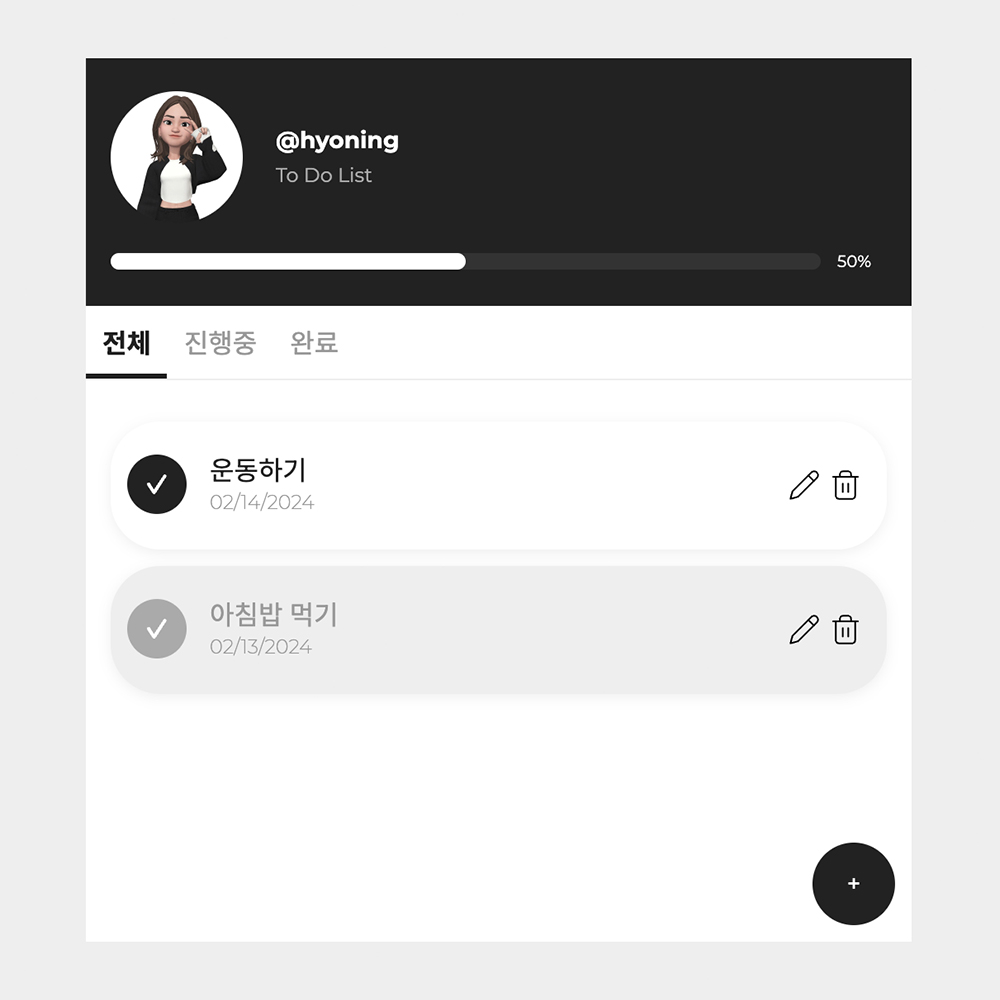

Go To List

이미지를 클릭하면, 해당 페이지로 이동됩니다.
To Do List (할일앱)
바닐라 자바스크립트를 통해 To Do List를 만들었습니다.
To Do List는 자바스크립트의 기본기에 대해 이해하기 쉬운 프로젝트입니다.
javascript
html
css
설명
할 일을 입력하면, 목록에 할 일이 추가됩니다.
체크박스를 통해 할 일 항목을 비활성화/활성화를 합니다.
할 일을 삭제 할 수 있습니다.
할 일을 수정이 할 수 있습니다.
전체 탭을 통해 전체 할 일을 볼 수 있습니다.
진행 중 탭을 통해 아직 완료되지 않은 할 일을 볼 수 있습니다.
완료 탭을 통해 완료된 할 일을 볼 수 있습니다.
프로그래스바를 통해 완료된 할 일이 몇 프로 남아있는지 확인 할 수 있습니다.
추가 개선사항
할 일 입력 완료 시 Enter Key를 통해 추가 가능하도록 변경 필요합니다.
마우스 더블 클릭시, 할 일 내용 수정이 가능하도록 기능 추가 필요합니다.